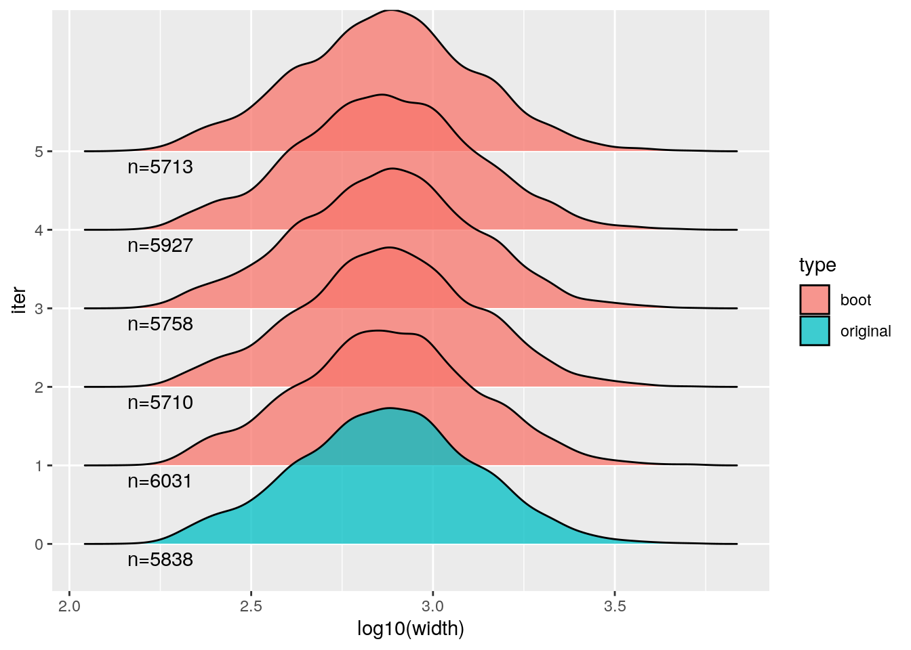
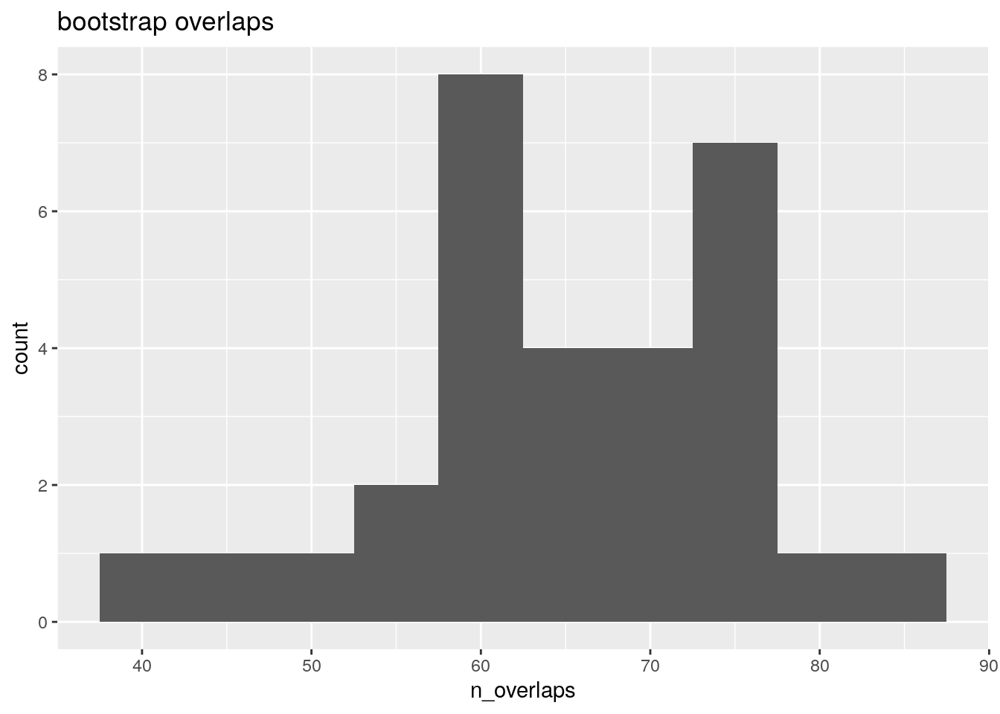

library(AnnotationHub)
## Loading required package: BiocGenerics
##
## Attaching package: 'BiocGenerics'
## The following objects are masked from 'package:stats':
##
## IQR, mad, sd, var, xtabs
## The following objects are masked from 'package:base':
##
## anyDuplicated, aperm, append, as.data.frame, basename, cbind,
## colnames, dirname, do.call, duplicated, eval, evalq, Filter,
## Find, get, grep, grepl, intersect, is.unsorted, lapply, Map,
## mapply, match, mget, order, paste, pmax, pmax.int, pmin,
## pmin.int, Position, rank, rbind, Reduce, rownames, sapply,
## setdiff, sort, table, tapply, union, unique, unsplit, which.max,
## which.min
## Loading required package: BiocFileCache
## Loading required package: dbplyr
ah <- AnnotationHub()
kidney_pks <- ah[["AH43443"]]
## loading from cache
## require("rtracklayer")
bladder_pks <- ah[["AH44180"]]
## loading from cache4 Bootstrap overlap
Objectives
- Determine if one set of peaks are overlapping another set of peaks more or less than expected when comparing to sets of null features
The null features can be generated in a variety of ways – here we will generate them by resampling large blocks of one of the peak sets.
The motivation for sampling blocks, instead of placing features uniformly along the chromosome (“shuffling”), is to better preserve inter-feature distances, because genomic features tend to cluster in the genome, even after considering things like excluded regions.
This technique of generating null feature sets is called block bootstrap resampling, and we will use the nullranges implementation of the block bootstrapping algorithm (Mu et al. 2023) to generate the null features, followed by overlap analysis with plyranges (Lee, Cook, and Lawrence 2019).
Mu, Wancen, Eric S Davis, Stuart Lee, Mikhail G Dozmorov, Douglas H Phanstiel, and Michael I Love. 2023. “bootRanges: flexible generation of null sets of genomic ranges for hypothesis testing.” Bioinformatics 39 (5). https://doi.org/10.1093/bioinformatics/btad190.
Lee, Stuart, Dianne Cook, and Michael Lawrence. 2019. “Plyranges: A Grammar of Genomic Data Transformation.” Genome Biol. 20 (1): 4.
Bickel, Peter J., Nathan Boley, James B. Brown, Haiyan Huang, and Nancy R. Zhang. 2010. “Subsampling Methods for Genomic Inference.” The Annals of Applied Statistics 4 (4): 1660–97. https://doi.org/10.1214/10-{AOAS363}.
The approach used in nullranges to generate bootstrap ranges closely follows the GSC method proposed by Bickel et al. (2010).
Note that an alternative approach for null hypothesis comparisons is to define a set of covariate-matched ranges, an approach also implemented in the nullranges package and described in Davis et al. (2023). For examples of using matching with ranges, see the related articles here.
Davis, Eric S, Wancen Mu, Stuart Lee, Mikhail G Dozmorov, Michael I Love, and Douglas H Phanstiel. 2023. “matchRanges: generating null hypothesis genomic ranges via covariate-matched sampling.” Bioinformatics 39 (5). https://doi.org/10.1093/bioinformatics/btad197.
Dunham, I. et al. 2012. “An integrated encyclopedia of DNA elements in the human genome.” Nature 489 (7414): 57–74.
We start by loading the ENCODE kidney and bladder H3K27ac ChIP-seq peaks used in the previous analysis (Dunham et al. 2012).
We will additionally obtain an excluded region set, so that we avoid placing bootstrap features into regions of the genome that don’t typically have features. A variety of possible exclude lists are provided by the excluderanges packages and available via AnnotationHub. Here we will use the hg19.Crawford.wgEncodeDukeMapabilityRegionsExcludable regions, as they are available for hg19, which is the genome used with the peak sets.
library(BiocBook.GRanges)
## Loading required package: BiocBook
##
## Attaching package: 'BiocBook'
## The following object is masked from 'package:graphics':
##
## title
data("exclude", package ="BiocBook.GRanges")
exclude
## GRanges object with 1649 ranges and 2 metadata columns:
## seqnames ranges strand | name score
## <Rle> <IRanges> <Rle> | <character> <numeric>
## [1] chr1 10468-11447 * | TAR1 1000
## [2] chr1 564463-570304 * | chrM 1000
## [3] chr1 724137-727026 * | (GAATG)n 1000
## [4] chr1 825006-825115 * | BSR/Beta 1000
## [5] chr1 1815107-1815204 * | LSU-rRNA_Hsa 1000
## ... ... ... ... . ... ...
## [1645] chrY 28555026-28555353 * | TAR1 1000
## [1646] chrY 28784131-28819345 * | (GAATG)n 1000
## [1647] chrY 58819367-58917648 * | (CATTC)n 1000
## [1648] chrY 58971913-58997782 * | (CATTC)n 1000
## [1649] chrY 59361267-59362785 * | TAR1 1000
## -------
## seqinfo: 56 sequences (1 circular) from hg19 genomeTo make the code more generic, we will rename the kidney peaks to x and the bladder peaks to y. We will be looking for overlaps with features in x as the query set: how many of the features in x overlap features in y?
The following code reduces our analysis to looking only at standard chromosomes, excluding the mitochondrial genome (too small for including in the block bootstrap).
library(GenomeInfoDb)
x <- kidney_pks
y <- bladder_pks
x <- keepStandardChromosomes(x)
seqlevels(x, pruning.mode="coarse") <- setdiff(seqlevels(x), "chrM")
seqlevels(y, pruning.mode="coarse") <- seqlevels(x)
seqlevels(exclude, pruning.mode="coarse") <- seqlevels(x)We are mostly concerned with avoiding placing bootstrapped features in large regions in the exclude list, so we subset the exclude list to features larger than 500 bp. Why do we have plyranges:: in front of filter? This is because there is a function in the ensembldb package that is also called filter, so it’s a bit safer if we are using both packages to use the package name.
We also subset to the peaks for kidney and bladder which have q-value less than 0.001 and signal value greater than 9 (these are arbitrary filter values, just for demonstration).
For further analysis, we will need the features in y to be sorted, for the bootstrapping, here we sort both sets.
Now we can assess how many overlaps we observed between x and y:
We can check if any of the features of y fall in the excluded regions:
y %>% mutate(n_overlaps = count_overlaps(., exclude)) |>
summarize(total = sum(n_overlaps))
## DataFrame with 1 row and 1 column
## total
## <integer>
## 1 0The following chunk of code does the bootstrapping of features in y. Here we subset first to metadata columns of interest (an id variable that we create, and the signal value which we rename to signal).
The bootRanges function returns the bootstrap feature sets combined into one GRanges object – this tidy format facilitates downstream analysis as we will see. The bootstrap iteration is stored in the iter metadata column.
library(nullranges)
R <- 30 # number of iterations
set.seed(5) # set seed for reproducibility
boots <- bootRanges(pks_to_boot, blockLength=5e5, R=R, exclude=exclude)
boots
## BootRanges object with 174764 ranges and 3 metadata columns:
## seqnames ranges strand | id signal iter
## <Rle> <IRanges> <Rle> | <integer> <numeric> <Rle>
## [1] chr1 2011397-2011809 * | 931 14.42934 1
## [2] chr1 2011973-2012399 * | 932 17.57052 1
## [3] chr1 2012505-2013073 * | 933 9.64691 1
## [4] chr1 2503670-2505748 * | 3752 20.84181 1
## [5] chr1 2505855-2507134 * | 3753 15.29241 1
## ... ... ... ... . ... ... ...
## [174760] chrY 57499850-57501632 * | 5141 10.09210 30
## [174761] chrY 57937341-57937960 * | 1062 15.98656 30
## [174762] chrY 58145916-58146540 * | 264 15.23097 30
## [174763] chrY 58146662-58147585 * | 265 12.26661 30
## [174764] chrY 58214091-58214746 * | 266 9.69322 30
## -------
## seqinfo: 24 sequences from hg19 genomeThe default use above of the exclude argument is to drop bootstrapped ranges that overlap the exclude list.
We can examine properties of permuted y over iterations, and compare to the original y. To do so, we first add the original features as iter=0.
combined <- pks_to_boot |>
mutate(iter=0) |>
bind_ranges(boots) |>
plyranges::select(iter)Then compute summaries:
Original y vs bootstrap:
stats[1,]
## # A tibble: 1 × 3
## iter n sum_width
## <fct> <int> <dbl>
## 1 0 5838 5.07
summary(stats[-1,])
## iter n sum_width
## 1 : 1 Min. :5595 Min. :4.843
## 2 : 1 1st Qu.:5723 1st Qu.:4.968
## 3 : 1 Median :5825 Median :5.042
## 4 : 1 Mean :5825 Mean :5.057
## 5 : 1 3rd Qu.:5910 3rd Qu.:5.130
## 6 : 1 Max. :6053 Max. :5.295
## (Other):24We can also look at distributions of various aspects, e.g. here the width of features, across a few of the bootstraps and the original feature set y.
library(ggplot2)
library(ggridges)
combined |>
plyranges::filter(iter %in% 0:5) |>
plyranges::select(iter) |>
as_tibble() |>
mutate(type = ifelse(iter == 0, "original", "boot")) |>
ggplot(aes(log10(width), iter, fill=type)) +
geom_density_ridges(alpha = 0.75) +
geom_text(
data=head(stats),
aes(x=2.25, y=iter, label=paste0("n=",n), fill=NULL),
vjust=1.5
)
To compute overlap with the null features, we need the complete() function from the tidyr package. We saw complete() before – this is used in the case that one of the iterations has no overlaps. In this case, we need to record the 0 value for proper inference and plots downstream. It is rare we would have no overlaps with so many features as we have in x and y but it’s good practice to leave the complete() as part of the workflow so the code works correctly in all cases.
The overlap per iteration of the bootstrap is accomplished by a series of plyranges / dplyr commands (we switch to dplyr halfway through, after the as_tibble() call).
sum( obs$n_overlaps )
## [1] 5073The observed number of overlaps is about two orders of magnitude more than the bootstrapped number, which makes sense as two tissues would be expected to share a number of similar regulatory regions (as marked by H3K27ac) – more so than randomly placed genomic features, even after accounting for excluded regions and feature clustering.
ggplot(null, aes(n_overlaps)) +
geom_histogram(binwidth=5) +
ggtitle("bootstrap overlaps")
What could be improved with this analysis?
Note that in the above chunks where we count overlaps, we are doubly (or triply, etc.) counting features in x if they hit more than one feature in y or boots. We can count statistics per x feature by adding another group_by into the stream of operations. This also allows us to do more complex operations, such as computing the maximum signal value for the overlapping features in y per feature in x:
First add an ID variable to keep track of x features:
Then perform an inner join, and group by the new x ID:
For the bootstrap ranges overlap step, we also need to add iter to the initial group_by, so we count per x feature and per iteration of the bootstrap:
null <- x |>
join_overlap_inner(boots) |>
group_by(x_id, iter) |>
summarize(num_overlaps = n()) |>
as_tibble() |>
group_by(iter) |>
summarize(any_hits = sum(num_overlaps > 0)) |>
complete(iter, fill=list(any_hits = 0))
head(null)
## # A tibble: 6 × 2
## iter any_hits
## <fct> <int>
## 1 1 55
## 2 2 55
## 3 3 68
## 4 4 50
## 5 5 37
## 6 6 63Still, we are seeing much more overlap in the observed data than in the bootstrap data:
The above code chunk then avoids double counting. We could also have made other per-x-feature statistics in the summarize step after the initial group_by, such as maximum signal of overlapping features.
What other ways could we have done this analysis? Suppose we don’t just want the count of overlaps, but the rate of overlaps from the y perspective, keeping track of the variable number of features per bootstrap.
We demonstrate one approach to obtain this rate for the bootstraps:
Now combine with the per-iteration total count:
totals <- boots |>
group_by(iter) |>
summarize(total=n()) |>
as_tibble()
null |> dplyr::left_join(totals) |>
mutate(rate = any_hits/total)
## Joining with `by = join_by(iter)`
## # A tibble: 30 × 4
## iter any_hits total rate
## <fct> <int> <int> <dbl>
## 1 1 59 6031 0.00978
## 2 2 58 5710 0.0102
## 3 3 73 5758 0.0127
## 4 4 50 5927 0.00844
## 5 5 37 5713 0.00648
## 6 6 59 5888 0.0100
## # ℹ 24 more rows